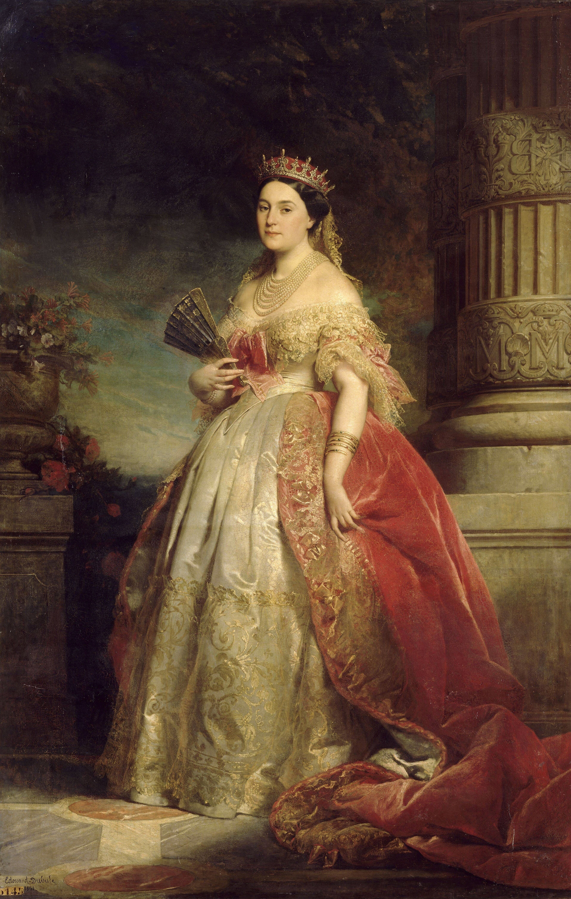
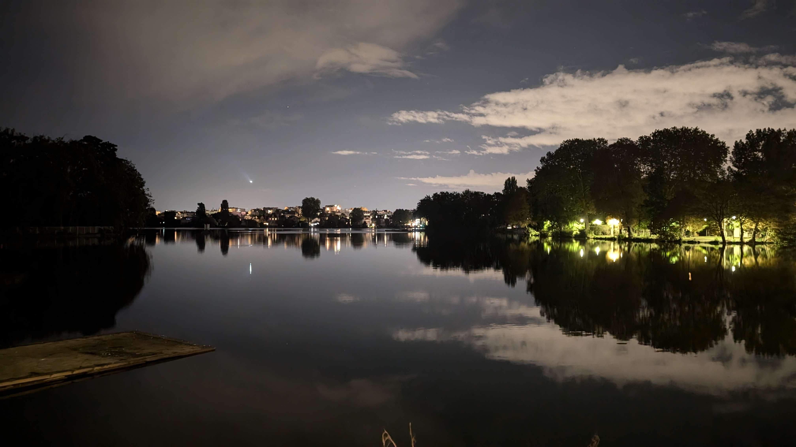
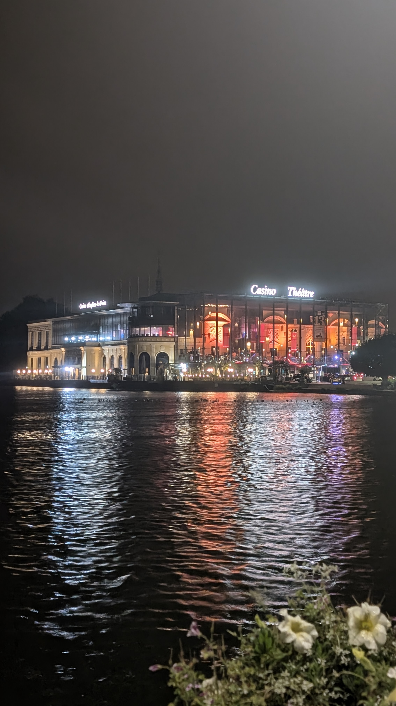
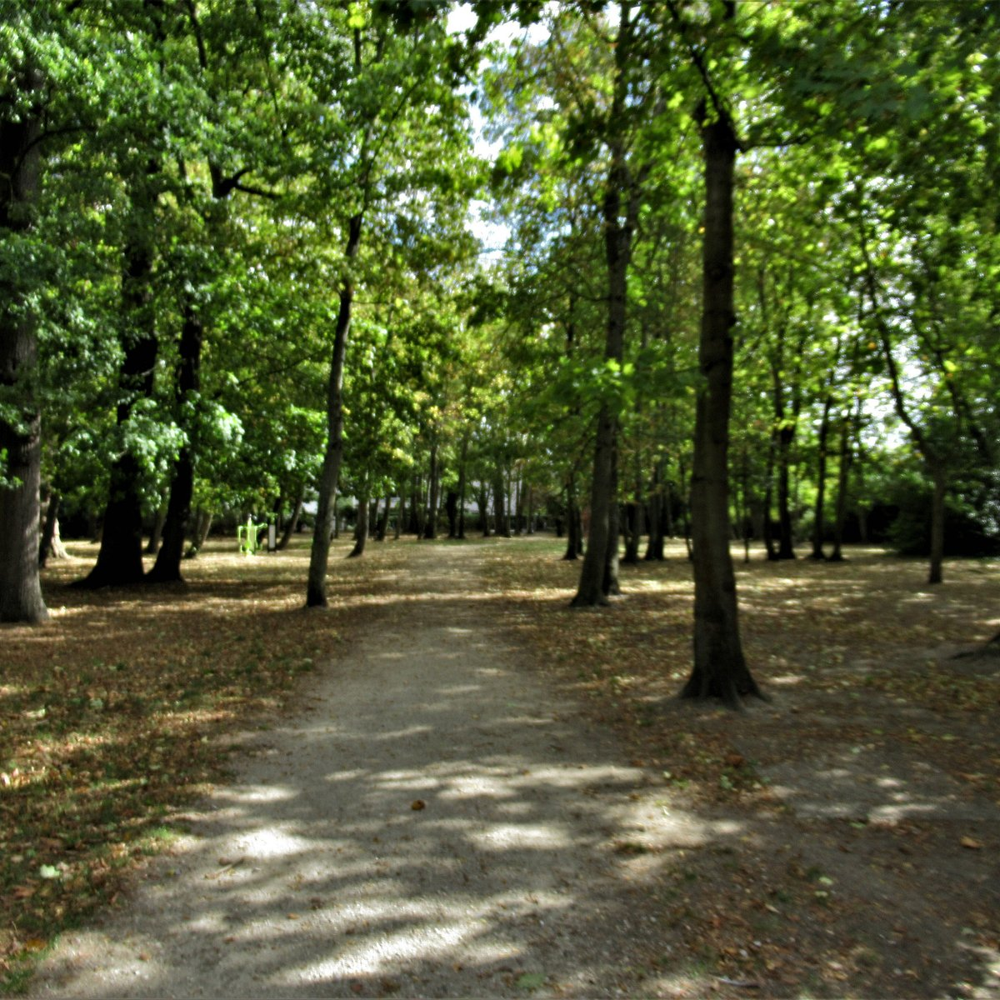
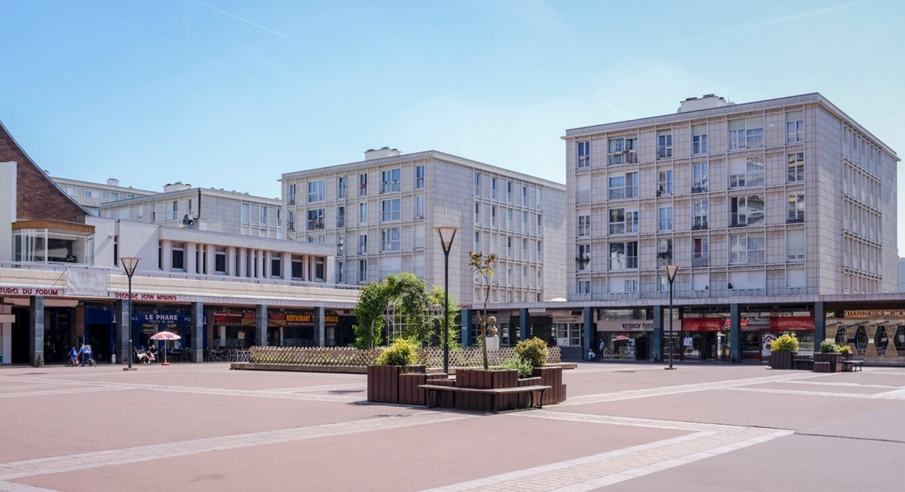
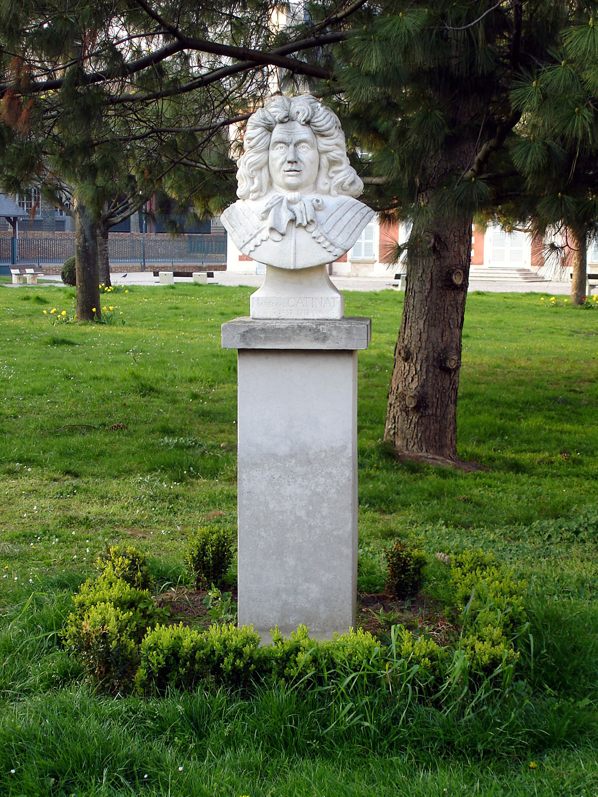
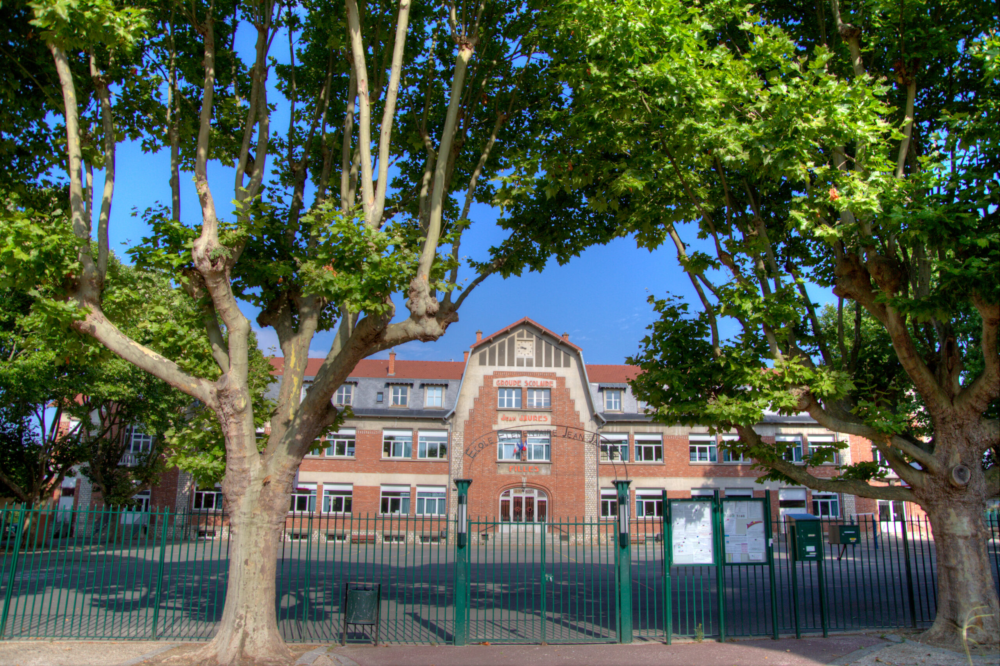
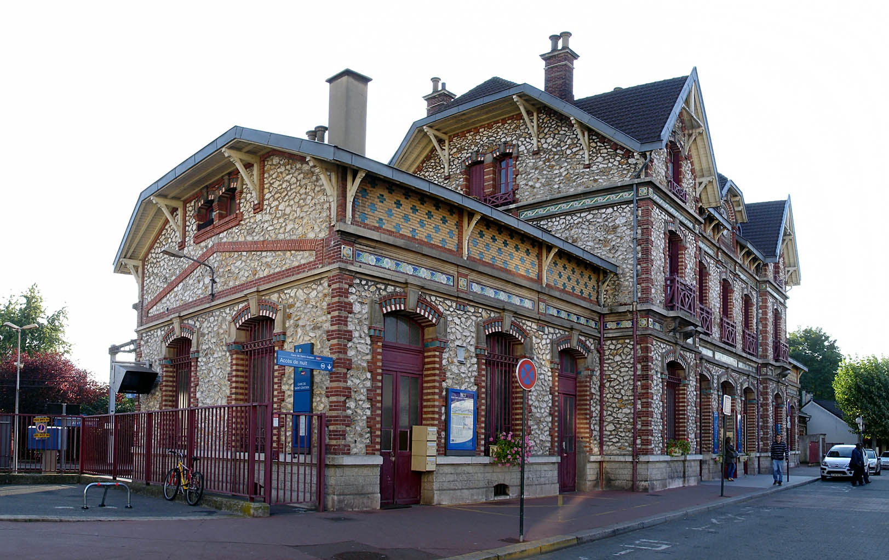

History
From Maréchal Catinat to the princess Mathilde.

A beautiful town in France near Paris neighbour to Enghien-Les-Bains.
Explore the city
This website is dedicated to providing information Sights the town, its history, culture, and attractions.
Saint-Gratien is a beautiful town in France near Paris (~15 km) and neighbour to Enghien-Les-Bains.
Saint-Gratien is known for its green spaces and the historical significance of Princess Mathilde, who held a famous salon in the 19th century.
This website offers a comprehensive guide to exploring Saint-Gratien, including its history, places to visit, and useful services for residents and visitors alike.
Whether you're planning a visit or looking to learn more Sights the town, we hope you find the information here helpful and engaging.
Enjoy your exploration of Saint-Gratien!





